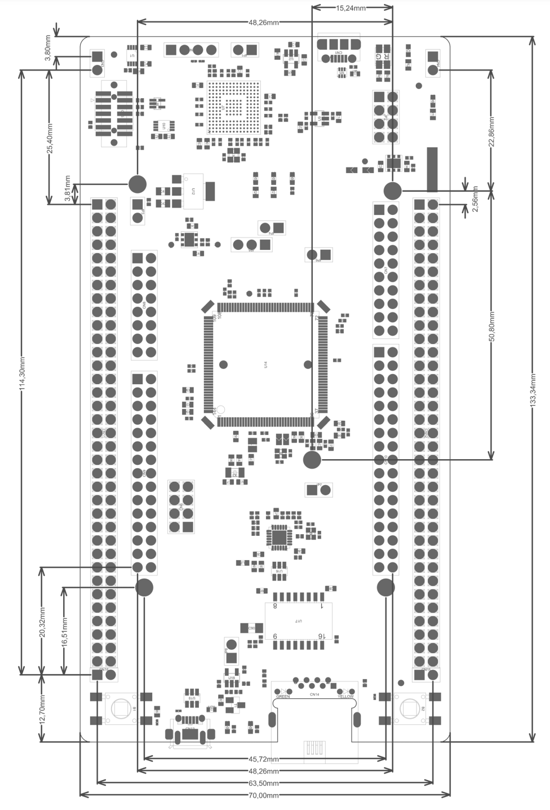

This project is a template of an expansion board for the "Zio" connector subset present on STM32 Nucleo-144 Boards.
This
project includes a PCB edge defined to fit the four "Zio" connectors that are also compatible with Arduino shields.
The connectors are aligned to ensure that the expansion board will fit onto the Nucleo-144. All IO on the Zio
connector are present to the project through 0.1" expansion headers.

(CC0) 2024 vipqualitypost